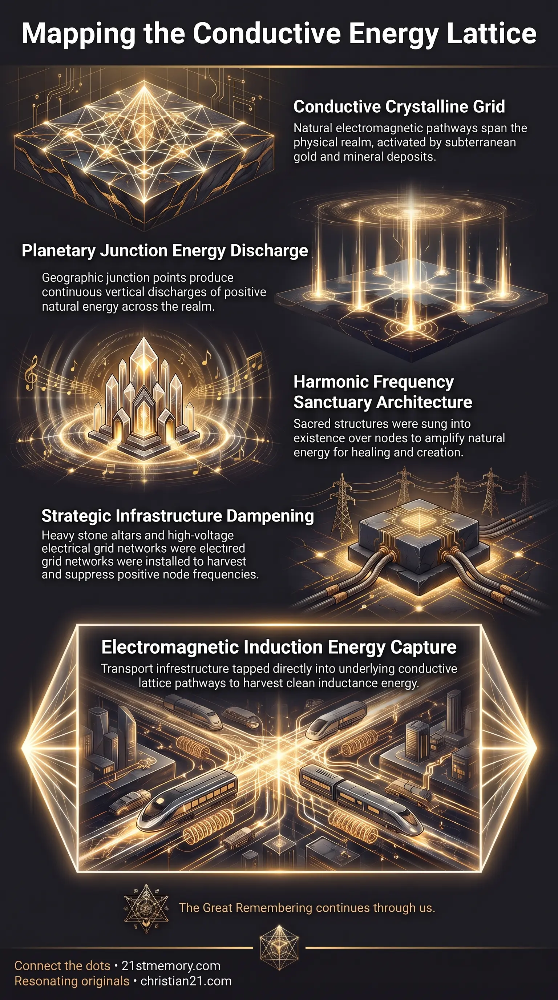

Crystalline Interface
Crystalline Interface — A crystal rising from the node floor was the focal point for resonance and large-scale manifestation before stone altars capped it.

Crystalline Interface — A crystal rising from the node floor was the focal point for resonance and large-scale manifestation before stone altars capped it.

Gold In The Ground — Gold in the ground reacts with the lattice as an active electromagnetic structure, not as jewelry or currency.

Cathedrals Were Built to Cage Earth Energy — Churches and cathedrals were built on crystalline temple footings to cover and dampen nodal energy.
Ley Lines and Nodes constitute the fundamental crystalline lattice membrane network that spans the physical surface of the realm. Ley Lines operate as conductive energetic pathways, while Nodes represent major and minor planetary junction points where natural electromagnetic energy emanates in powerful vertical discharges. Every major ancient architectural structure and historical site on Earth—including the Great Pyramids, Angkor Wat, Angkor Thom, Hagia Sophia, the Taj Mahal, the London Square Mile, as well as all historic churches and cathedrals—was intentionally positioned directly over a major or minor node.
Historically, these nodes were crowned with crystalline temples, which functioned as sacred healing sanctuaries and manifestation centers rather than palaces for royalty. These structures were specifically engineered to gather and amplify the natural energetic fountain of energy rising out of the ground. The operational integrity of this entire lattice system relies directly on the presence of subterranean minerals—most notably gold in the ground, which reacts directly with the lattice as an active electromagnetic structure and planetary spiritual technology, rather than ornamental jewelry or financial currency.
The primary truth of ley lines and nodes is that planetary geography is not an arbitrary distribution of landforms, but an intentionally designed ergonomic technology. All ancient sites across the realm were built on exact junction coordinates of the lattice. These sites were never places of religious worship or administrative power for monarchs; they served as essential infrastructure for maintaining the spiritual and physical homeostasis of the realm and its inhabitants.
Furthermore, subterranean resources were never intended for extraction, commercial transaction, or body ornamentation. Gold, silver, copper, and precious gemstones embedded along the lattice membrane network act as functional components of an intrinsic planetary circuit. The interaction between gold in the ground and the ley lines creates unique, localized frequency signatures at every individual node, giving each location distinct therapeutic and creative capabilities.
At every node, the earth produces a natural, continuous fountain of energy. To harness this discharge, crystalline temples were manifested directly over the junction points. These edifices were not constructed through physical labor, block masonry, or manual bricklaying; they were woven and sung into existence from higher light realms using harmonic frequencies and pure intentional projection through the pineal gland, manifesting as solid, fractal crystalline structures.
Inside each original temple stood a central crystalline interface—a solid crystal formation protruding from the floor to approximately human height. This interface represented the focal point of the node's output. Beings utilized these interfaces to engage in large-scale manifestation, projecting thoughtforms into the realm's simulation software to instantaneously create complex physical structures, vehicles, and items.
Gold in the ground serves a precise technological function within the crystalline lattice network. Rather than being inert metal or an object of monetary value, gold acts as a conductive element within the electromagnetic structure of the realm. When natural electromagnetic currents travel along the ley lines, they interact with gold veins and gemstone deposits embedded in the surrounding strata.
This interaction generates specific vibrational octaves and localized field characteristics at each node. Similar to natural mineral springs, each node possesses a distinct chemical and energetic composition based on the specific arrangement of metals in its underlying subterranean geology, enabling targeted physical regeneration and specialized consciousness interaction.
Every significant historical edifice across the globe marks a specific node within the lattice membranes. Key examples include:
In modern times, parasitic control systems installed infrastructure specifically designed to disrupt, suppress, and harvest the ley lines.
The ley lines and nodes network connects laterally to every physical settlement and geographic feature across the realm. Settlements and villages were originally placed precisely at node locations to capitalize on localized energetic fields. As population centers expanded outward, the natural energetic currents of the lattice were systematically bounded by surrounding infrastructure.
The lattice network also connects directly to the central planetary energy source located at the pole, where the root structure of the central spirit tree formerly integrated directly into the broader crystalline lattice membrane network. Additionally, individual human energetic codices—known as the soul codex—interact directly with the grid. When an ancient soul comes into physical proximity with a node, church, or cathedral, their unique harmonic architecture transmits coded balancing data directly into the lattice membrane network.
Understanding ley lines and nodes dismantles conventional historical, geological, and economic paradigms.
Dismantling Financial Materialism: Recognizing that gold in the ground is a functional electromagnetic structure invalidates gold mining, commercial trading, and wealth accumulation, revealing mining as a destructive disruption of planetary energetic infrastructure.
Reclaiming Architectural Purpose: Identifying historical cathedrals, pyramids, and ancient sites as nodal crystalline temples proves that monumental architecture was designed for collective energy amplification, healing, and manifestation rather than monarchical vanity or religious subjugation.
Reevaluating Historical Transit and Energy: Understanding that transport networks follow ley lines confirms that free, wireless, self-powering energy systems were already fully operational through electromagnetic induction prior to the artificial introduction of fossil fuel reliance.
Energetic Restoration: Restoring the natural function of nodes and removing frequency-dampening overlays allows the crystalline lattice network to return to its original high-frequency operational state, restoring natural balance and energetic baseline across the realm.
This topic is free to share. Support the archive →